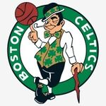
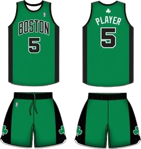
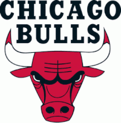
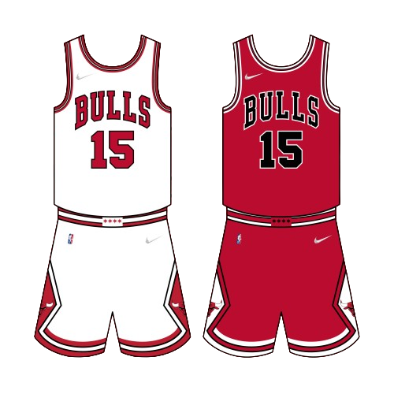
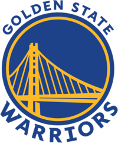
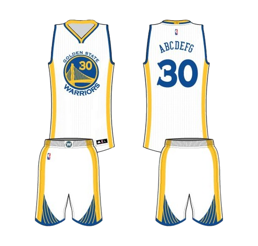
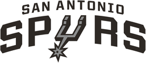
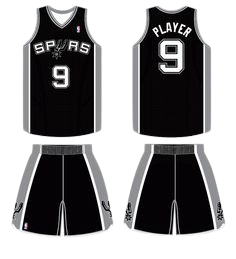

Top 5 teams
Lakers

«Лос-Анджелес Лейкерс» — американский профессиональный баскетбольный клуб из Лос-Анджелеса. Выступает в Тихоокеанском дивизионе Западной конференции, в Национальной баскетбольной ассоциации (НБА). Домашние игры проводит в «Стэйплс Центр», где также играет ближайший соперник по лиге «Лос-Анджелес Клипперс» Клуб был основан в 1946 г.
Чемпионство НБЛ: 1 (1948) БАА/НБА: 17 (1949, 1950, 1952, 1953, 1954, 1972, 1980, 1982, 1985, 1987, 1988, 2000, 2001, 2002, 2009, 2010, 2020)

Boston Celtics
«Бо́стон Се́лтикс» — американский профессиональный баскетбольный клуб, располагающийся в Бостоне, штат Массачусетс. Выступает в Атлантическом дивизионе Восточной конференции Национальной баскетбольной ассоциации. Клуб был основан в 1946 году и за время своего существования 17 раз выигрывал титул чемпиона НБА.
Чемпионство 17 (1957, 1959, 1960, 1961, 1962, 1963, 1964, 1965, 1966, 1968, 1969, 1974, 1976, 1981, 1984, 1986, 2008)
Chicago Bulls
«Чикаго Буллз» — профессиональная баскетбольная команда, базируется в городе Чикаго, штат Ил линойс. Выступает в центральном дивизионе восточной конференции НБА. Домашние игры проводит в «Юнайтед-центр». Команда была основана в 1966 году и наиболее известна как одна из величайших династий в истории НБА, выигравшая шесть чемпионских титулов за восемь лет в конце XX века (1991—1993 и 1996—1998). Ко всем шести чемпионским титулам «Буллз» вели Майкл Джордан, Скотти Пиппен и главный тренер Фил Джексон. В сезоне 1995/96 «Буллз» выиграли 72 игры в регулярном сезоне, став первой командой
Golden State Warriors
«Го́лден Стейт Уо́рриорс» — американский профессиональный баскетбольный клуб из Сан-Франциско, Калифорния. Выступает в Тихоокеанском дивизионе Западной конференции Национальной баскетбольной ассоциации (НБА). Команда была основана в 1946 году как «Филадельфия Уорриорз» (англ. Philadelphia Warriors) в Филадельфии, штат Пенсильвания. В дебютном же сезоне команда выиграла чемпионат Баскетбольной ассоциации Америки (БАА), которая впоследствии стала Национальной баскетбольной ассоциацией, после слияния с Национальной баскетбольной лигой (НБЛ).
San Antonio Spurs
«Сан-Антонио Спёрс» — профессиональный баскетбольный клуб, выступающий в Национальной баскетбольной ассоциации. Команда была основана в 1967 году. Клуб базируется в городе Сан-Антонио, Техас. Домашние матчи проводит на арене AT&T-центр. «Сан-Антонио Спёрс» является одним из четырёх бывших участников АБА, неизменно принимающих участие в НБА, после того, как в 1976 году AБA и НБА слились в единую Лигу, и является единственной бывшей командой AБA, которая выиграла главный трофей НБА
